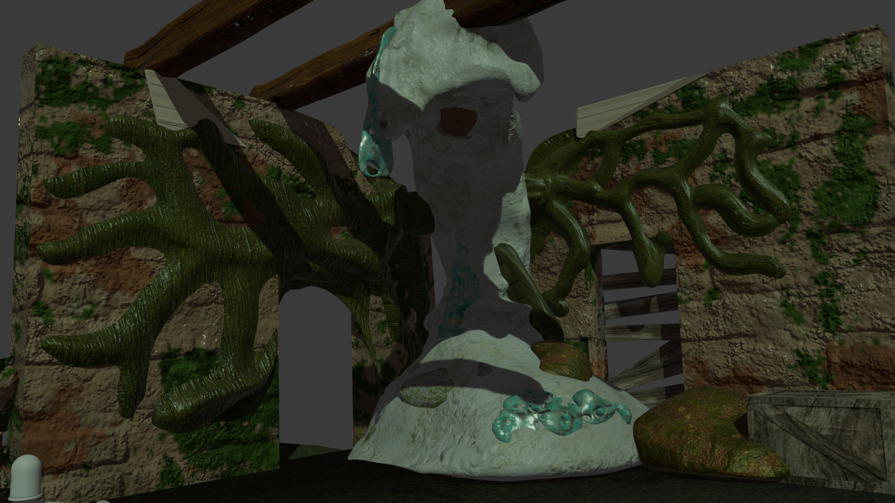
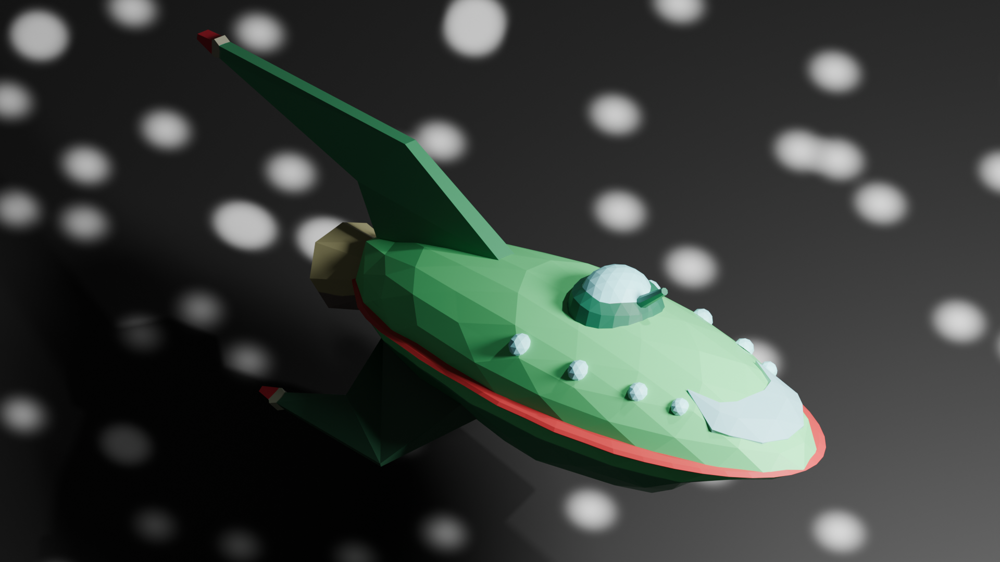
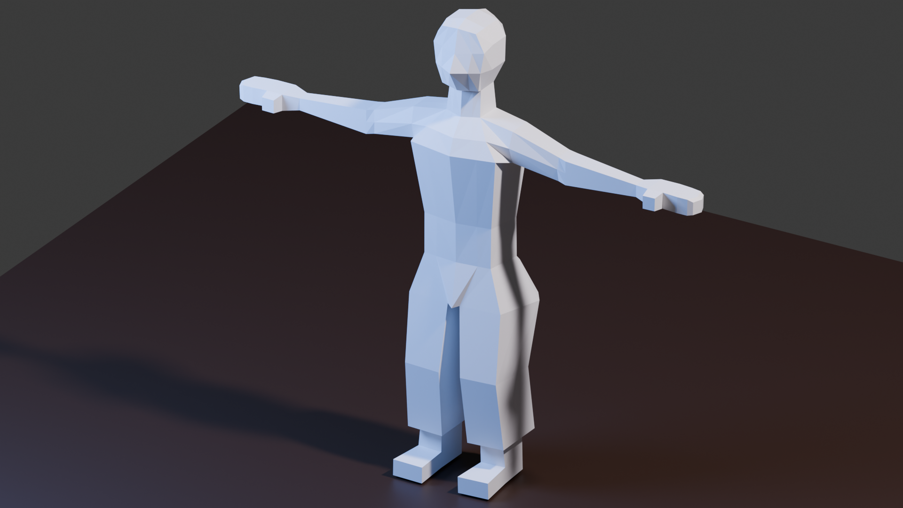
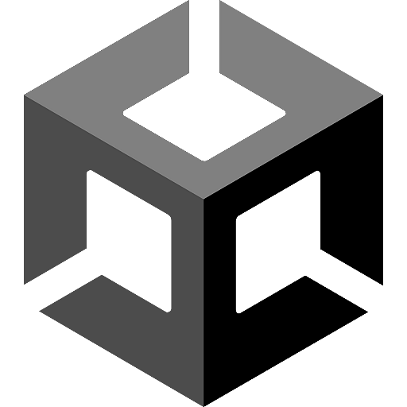
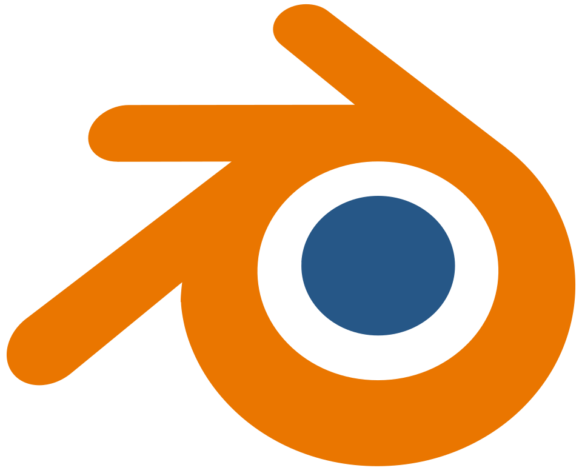
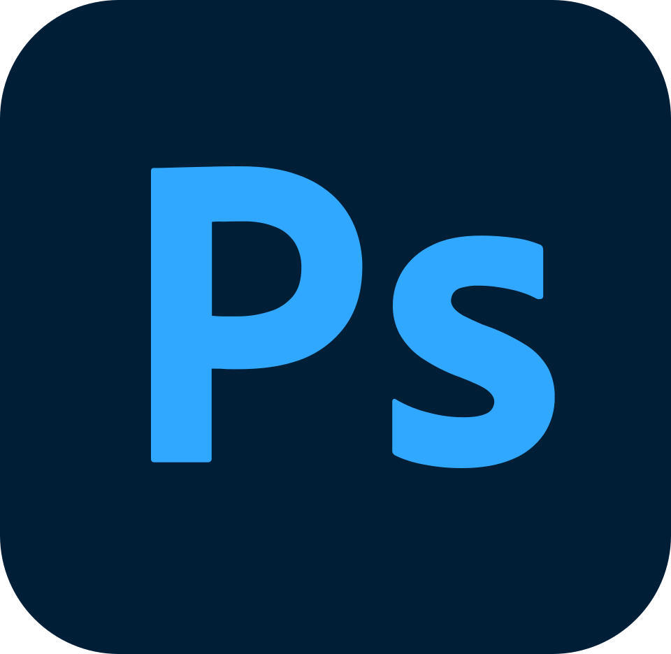

Portafolio
Proyectos y Participaciones
Geo-Vivo

Render de Ser Geo-Vivo diseñado para una Experiencia VR en Auratán. Basado en arquitectura blanda, este ser, cobra vida a base de AlbedoX
- Blender
- VR
- Retopologia
Proyecto Futurama

Modelados Low Poly, Basado en serie Futurama, Hecho a su vez con LODS.
- Blender
- LODs
Modelo Básico

Base de personaje low-poly usada como punto de partida para rigging. Destacado por haberlo hecho en un tiempo relativamente corto (20 min. aprox).
- Low Poly
- Rigging
Plataformas de trabajo

Unity
Motor principal para el desarrollo de experiencias interactivas y videojuegos.

Blender
Modelado, texturizado y animación 3D de personajes y escenarios.

Photoshop
Edición de texturas, composición de imágenes y diseño gráfico.

C#
Programacion Basica
Recomendaciones
Las recomendaciones se guardan solo en este navegador.